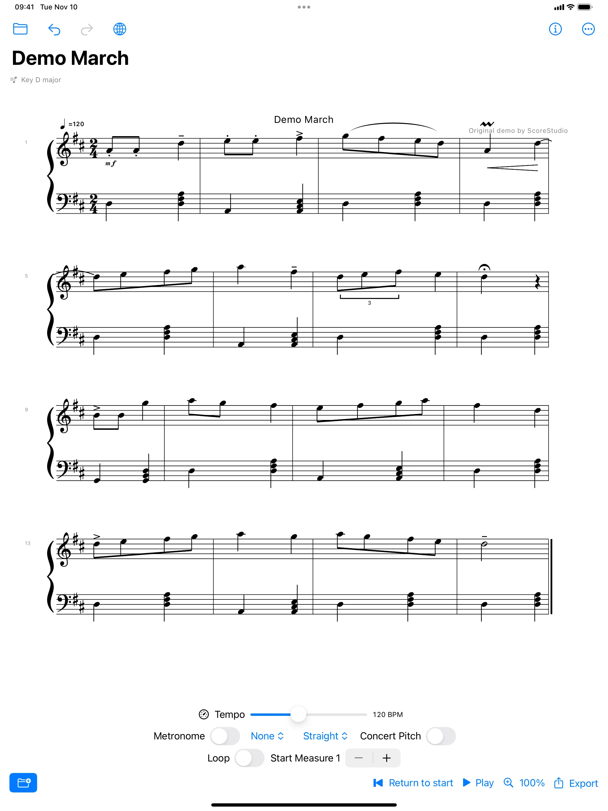
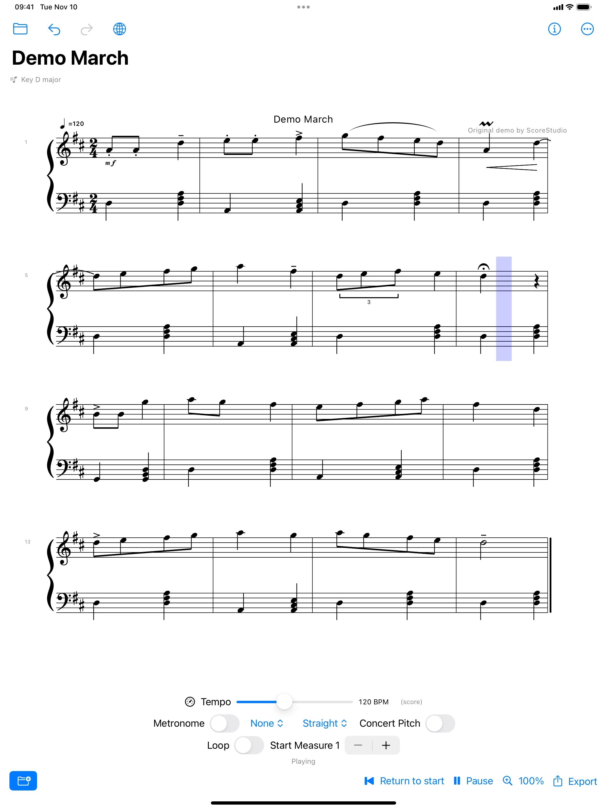
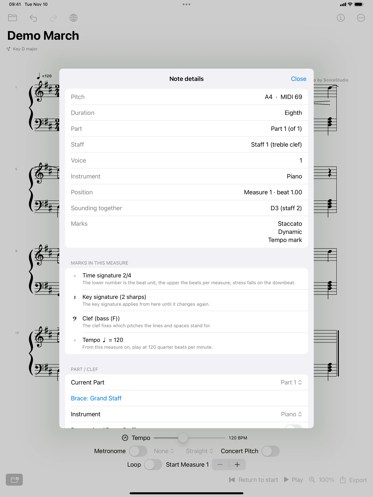
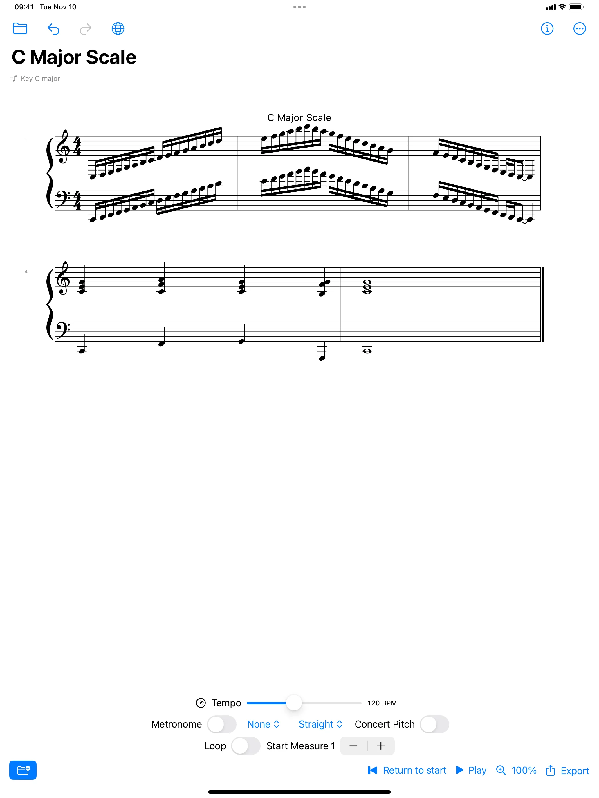

Why it is not just a “score viewer”
The key difference: it actually reads the notes, voices and symbols in the score, instead of treating the page as a picture.
Playback built for practising
Any tempo from 40–240 BPM; start from any measure and loop; mute the left hand or any voice on its own; pause and resume exactly where you stopped.
Tap a symbol, understand it
“Music Classroom” explains 13 common symbol types in plain language (dots, staccato, key signatures, tempo marks and more).
Your scores stay on your device
Fully offline: no account, no permissions, no SDKs, no data collected. Your child's exercises and your teacher's scores are never uploaded.
Sound out of the box
A built-in General MIDI sound set — no downloads, no extra gear. Dynamics, pedals, grace notes, bends (falloff / scoop / bend), cross-staff arpeggios and adjustable rolls all follow the score.
Engraved like print
Professional music font and layout: slurs, multi-voice rests, grand staves, drum notation and TAB all read clearly; the playhead follows line by line and pages turn automatically.
Reads in, converts out
All three MusicXML formats plus .mscz/.mscx conversion; export to PDF / PNG / MIDI / WAV / MusicXML through the system share sheet.
Who uses it · four kinds of players, four ways to practise
One app, different needs at every stage. Pick the one that sounds like you.
Parents who don't read music can still help
“Even if you can't read music, you can help your child get this measure right.”
- Tap a symbol → the classroom explains it, no need to ask the teacher
- Slow to 60 and mute the left hand to work on the right alone
- Tap the measure your child keeps missing, start there and loop
- Voice: follow lyrics and chords, slow down and sing along
Break a hard piece into measures
“Practise only the part you can't play — no more starting from the top.”
- Start at the hard measure, loop it, raise the tempo step by step from 60
- Choir / band: mute the other voices and hear only your line
- Trumpet / sax: shows “written note vs sounding note”
- Screen stays awake while playing; pages turn themselves
Get back what you set aside
“Ten minutes a day, at your own pace.”
- Start at 60 BPM, then raise the tempo as your fingers keep up
- Loop just the measure you're stuck on
- Practise hands separately; transpose to a comfortable range
- Don't recognise a symbol? Tap it and read the explanation
Slower, bigger, pages turn themselves
“Your phone or tablet is a patient practice partner — set it up once and go.”
- Pinch to zoom until the score is easy to read; symbols don't overlap when enlarged
- Set the tempo to 60 or lower and listen to a phrase again and again
- The blue cursor shows where you are; pages turn automatically
- Built-in sounds play right away — no extra setup
- No network, no sign-up; scores and privacy stay on the device
Note: the interface is available in Chinese and English. It is designed for all ages, but there is no dedicated senior-friendly mode yet.
What you can actually use while practising
Zoomable scores
Pinch to zoom up to 4×; noteheads and symbols scale together without overlapping — readable on small screens and for tired eyes.
Easy transport
Back to start · play / pause / resume · start from the selected note.
Tempo freedom
40–240 BPM, adjustable in real time, even while playing.
Mute as you like
Mute the left hand or any voice on its own; chord symbols can be muted or sounded, with a separate volume — practise the accompaniment alone or the melody alone.
Performance details you can hear
Cross-staff arpeggios drawn as one wavy line across both staves; arpeggio rolls in slow / medium / fast / custom speeds; falloffs, scoops, plops, doits and guitar bends (including pre-bends) all sound as written.
Metronome & count-in
Click, swing and concert pitch, ready to adjust.
Exercise generator
Roots C / F / G with their relative minors — 10 exercise types: major, natural-minor and harmonic-minor scales, long and short arpeggios, chords (I-IV-V-I). Choose up/down, 1–3 octaves and an optional cadence. Generated exercises can be transposed too. Plus two built-in reference scores (G major, A harmonic minor).
Transpose for your instrument
Transpose the whole score from the Details panel (up/down a semitone, ±12 semitones, undoable); export a B♭ / E♭ / F instrument part or an octave-down copy — export only, the on-screen score stays unchanged.
Note details
Pitch, duration, voice and staff, beat position, dynamics, lyrics and chord symbols at a glance.
Repeats & jumps
Repeats, endings, D.C./D.S. al Fine and To Coda followed as written.
Free score source
Comes with 205 public-domain scores (art songs, string quartets; CC0) — search on the web, download free, then import and practise.
Export & share
PDF / PNG / MIDI / WAV / MusicXML, saved through the system panel.
A look at the app
Real screenshots (iPad). Left to right: score layout / playhead following / note details and Music Classroom / scale practice.




Frequently asked questions
Is it really completely free? How is it sustained?
Yes — free, no ads, no in-app purchases, no subscription, and no feature is locked. The support page lists the developer's email; donations are entirely voluntary: they unlock nothing, come with no reward, and there is no donation button inside the app.
Does it upload my scores? Do I need an account?
No. The app runs fully offline: no account, no permissions requested, no analytics or advertising SDKs, and the privacy label is “Data Not Collected”.
Can I edit or engrave scores? Can I transpose?
It is not an engraving tool and has no note-by-note editing — it focuses on reading, listening and practising. Transposition is available: the Details panel can transpose the whole score (up/down a semitone, ±12 semitones; this rewrites pitches and key signatures and can be undone with Undo). Export also offers transposed export (B♭ / E♭ / F instrument, octave down), which affects only the exported copy — the on-screen score stays unchanged.
Which formats are supported? Can it scan printed music?
MusicXML (.xml / .musicxml / .mxl), .mscz / .mscx conversion, and experimental vector-PDF import. There is no optical recognition (OMR) and no MIDI import.
I can't engrave scores — where do I get them?
Four routes, from easiest to most flexible: ① Use the built-in exercises — the generator offers roots C / F / G with relative minors and 10 exercise types (major, natural-minor and harmonic-minor scales, long and short arpeggios, chords I-IV-V-I), with up/down, 1–3 octaves and an optional cadence, plus two reference scores (G major, A harmonic minor); generated exercises can be transposed (±12 semitones, undoable), so transposing instruments (B♭ / E♭ / F) match their own key. ② Import a MusicXML (.xml / .musicxml / .mxl) your teacher shares. ③ Download from the companion public score library — 205 public-domain scores (art songs, string quartets; CC0) — then import. ④ Export MusicXML from desktop notation software and import it. The app does not engrave and has no OMR, but basic practice works out of the box, and any score you have can be used.
Durations look wrong after importing a PDF?
Vector-PDF import is experimental: staves, pitches and measures are mostly accurate, but durations are approximate — please check after importing. Scanned images are not supported.
No sound when I press play?
The app uses a built-in sound set, so nothing needs downloading. If it is still silent, check the device volume and the mute switch, or email us.
Is it only for iPhone / iPad?
Yes — iOS 16 or later. There is currently no Android, Mac or web version.